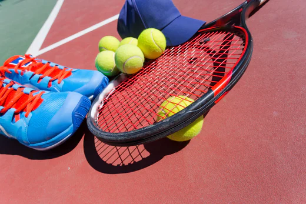

Die richtige Ausrüstung ist im Tennis entscheidend für Leistung und Komfort. Der Tennisschläger sollte zum Spielstil und zur Körpergrösse passen, wobei Gewicht, Griffstärke und Bespannung eine wichtige Rolle spielen. Hochwertige Tennisbälle sorgen für ein gleichmässiges Spielverhalten und sind an die jeweilige Platzart angepasst.
Tennisschuhe bieten Stabilität, Dämpfung und die nötige Haftung, um schnelle Bewegungen auf verschiedenen Belägen zu ermöglichen. Auch die Kleidung sollte funktional sein: Leichte, atmungsaktive Stoffe sorgen für Bewegungsfreiheit und Temperaturregulierung. Eine gut gewählte Ausrüstung unterstützt den Spieler dabei, sein volles Potenzial auszuschöpfen.